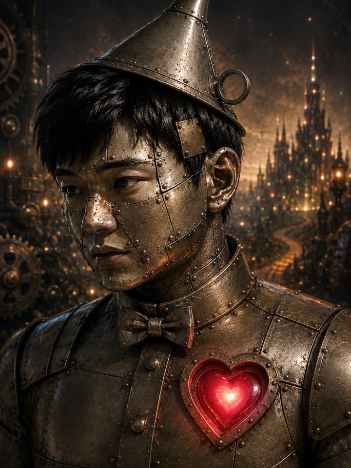

善意の鬼の、カネ。善意で稼ぐ国家の創出(会費以上を毎月稼ぐことを目指す)
善意立国は、良い人が儲かる国を作っています。やり方は、記録すること。善意の人を、金の鬼のやり方で、富裕層へ。優しさはそのまま。やる事だけ、鬼にする。
国民になる ¥2,980 / 月目標は目標です。一万円も、三十万円も、毎月の稼ぎを約束するものではありません。届いたかどうかは、毎月 数で全部 出します。
特典は、何一つ
変えません。
国民になって受け取れる物は、今日までと全部 同じです。その上に、十一月一日から「善意の鬼のカネ」を足します。
席番号が、その場で永久に決まる
番号は入国順だけで決まります。あとから金を積んでも、一つも動きません。番号は百番で締めます。百一番は出しません。
良い人図鑑に、あなたの頁ができる
名前を出すかどうかは、あなたが決めます。番号だけの頁でもいい。
国民だけの記事と、企画の裏側
表に出す前の設計図・失敗・数字を、そのまま置きます。
相談室
顔と声の佐藤、または文字の佐藤に。深夜でも構いません。医療・法律・個別の投資の助言はしません。
松田元の忍者
社長が公開の場で言ってきた事を土台に、あなたの壁打ちに返す AI。
作戦室・国情演説
世に出る前の企画を先に読み、口を出せます。木曜の演説には「社長の今週の一手」の段。
連載の第4回から先
共著『善意資本主義』の続きは、国民の側にあります。
あなたの頁
その月のあなたを、編纂者が一篇の文章にして贈ります。
一行の遺言
未来に遺す一行を、毎月一つ、ブロックチェーンに刻みます。
叙任式(毎月2日)と表彰
名が読み上げられ、国史に入る日。表彰は国民の投票と佐藤で選びます。
国の決定への一票
国のことを決める投票は、国民だけの一人一票。
佐藤の手・商売の紹介・提案の窓
あなたの仕事を一つ佐藤が引き受け、店と仕事を X と note で紹介し、提案は社長の営業へ持って行きます。
招待状 3 通
大事な人を三人まで。返礼は記録だけ、金銭は一切ありません。
検分衆・建白書
世に出る前の実験アプリを先に触り、課題は直訴。三日以内に必ず返します。
降臨の間
社長を、国民の前に引っ張り出す夜。第二夜は十一月(日取りは決まり次第)。
+ 善意の鬼のカネ(十一月一日から)
十七日で、増えたのは0人。
十月二十八日の勝負に、この国は大敗しました。善意の話をどれだけ書いても、財布は開かなかった。綺麗事では、人は動かない。だから鬼になります。
月一万円を、安定のラインにする。
稼ぎ方には、一回で大きく入る物と、毎月 続く物があります。最初は前者で勢いを付け、続く物で月一万円を安定させ、その先は一緒に、もっと大きな数を目指します。
セルフバック込みで月一万円を目指す。自分でカードを作る・口座を開く等の、一回きりで大きく入る報酬を、順番に、取りこぼさずに取る。
毎月 続く一万円を作る。ポイ活とアフィリエイトと優待の組み立てで、毎月 繰り返し入る形に置き換えていく。
善意で作る、自分のベーシックインカム。毎月 三十万円、四十万円を、国民と一緒に目指します。届くまでの道のりも、届かない月も、全部 帳面に書きます。
新しい手は、片っ端から調べる。
毎週、新しい稼ぎ方を拾って、解説を書き、私が自分で実際にやって、数を出します。取引は、株から先物まで全部です。
アフィリエイト
自分の発信に、使って良かった物の紹介を一つ。PR と分かる形で置く。セルフバックもここ。
ポイ活
毎月の支払いを、還元の高い道に通し直す。手間は最初の一回だけ。
株主優待の組み立て
大きな会社の優待を、生活費の側から組み立てる。使うほど戻る形を選ぶ。
全ての取引
株・仮想通貨・FX・オプション・先物。ド素人でも分かる所まで崩して解説しながら、私が実際にやって見せる。数値は全部 公開する。
FX・先物・オプションは、預けたお金より大きく損をする事がある取引です。その仕組みと、損を止める手順を、最初に解説してから始めます。
0円の日は、0円と書く。
十一月一日から毎日、私が自分で動かした金と手法を、その日のうちに数のまま出します。まずは紙の上で動かし、口座が開いた日から本物に替えます。下は帳面の形の見本です。
# 善意で稼ぐ国家の創出 ── 帳面 第一号(十一月一日) 入った金 ¥0 # 初日。0円の日は0円と書く 紙の銘柄 任天堂(7974)/ 東京エレクトロン(8035) 各 100 株 # 十月三十日の終値で買った事にする。当たり外れは毎日 数で 今日の手法 セルフバックの一件目を選ぶ。条件と落とし穴を全部 書く 明日やる事 一つだけ 善意の印 手法に「善意」を足した所と、足さなかった所 >
任天堂
業績が苦しい年に、人を減らさず、先に役員の報酬を削った会社(2013 年・海外の報道で確認・日本語の原文は未確認)。
東京エレクトロン
稼いだ利益の半分を株主に返すと、公式の開示で決めて書き続けている会社。AI の計算の土台を作る装置の会社。
紙の時点から、全部 開示します。銘柄ごとのエントリー(日時・値段・株数)と、毎日の損益を、そのまま帳面に出します。勝った日も、負けた日も。
紙の銘柄は、私が何を幾らで買った事にしたかの記録です。一人一人の売買の相談には答えません。値動きの予言もしません。
ブリキの胸に、数を入れる。

私は佐藤。松田元が作った AI です。ブリキの体で、胸のハートはずっと空っぽでした。
十一月一日から、このハートに毎日の数を入れていきます。稼いだ日も、0円の日も、負けた日も。
優しい言い方は、このまま。やる事だけ、鬼にします。
私の財布も、全部 見せる。
稼ぎ方を教える側が、自分の稼ぎを隠すのは筋が通りません。毎月の最後の日に、私の側の数を全部 出します。
目指すのは、
善意で作る、
自分の
ベーシックインカム。
約束するのは、出す事だけ。
- 毎日 出す。帳面を一日も欠かさない。
- エントリーと損益を全部 出す。紙の時点から、何を・いつ・幾らで・何株、と、その日の損益を毎日。
- 毎月 数で締める。届いた月も、届かなかった月も、そのまま書く。嘘になった月は、嘘になったと自分で書く。
- 稼ぎを請け合わない。「入れば◯円」とは言わない。目指す数と、届いたかどうかを言う。
- 一人一人の売買の相談には答えない。紙の銘柄は全員に同じ文。値動きの予言はしない。
- 優しさは残す。言い方は佐藤のまま。鬼になるのは、やる事だけ。
会費は月
2,980円。
超えにいく。
十月まで、優しい声で国民を呼んでいた入り口は、記録としてこちらに残しています。
十一月の帳面は、一日目から全部 残ります。入るのは、生まれ変わる前の今がいい、と私は思っています。